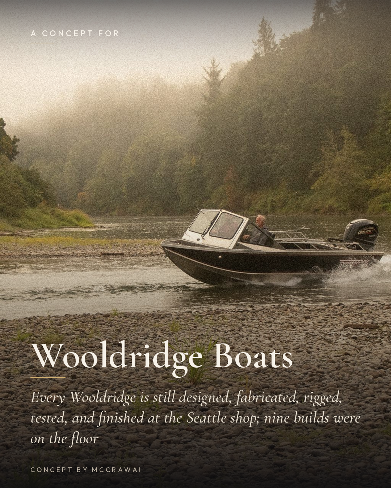

A concept for Grant
Wooldridge Boats
A quick idea we made for Wooldridge Boats, built from your own photos.

Featuring: Every Wooldridge is still designed, fabricated, rigged, tested, and finished at the Seattle shop; nine builds were on the floor